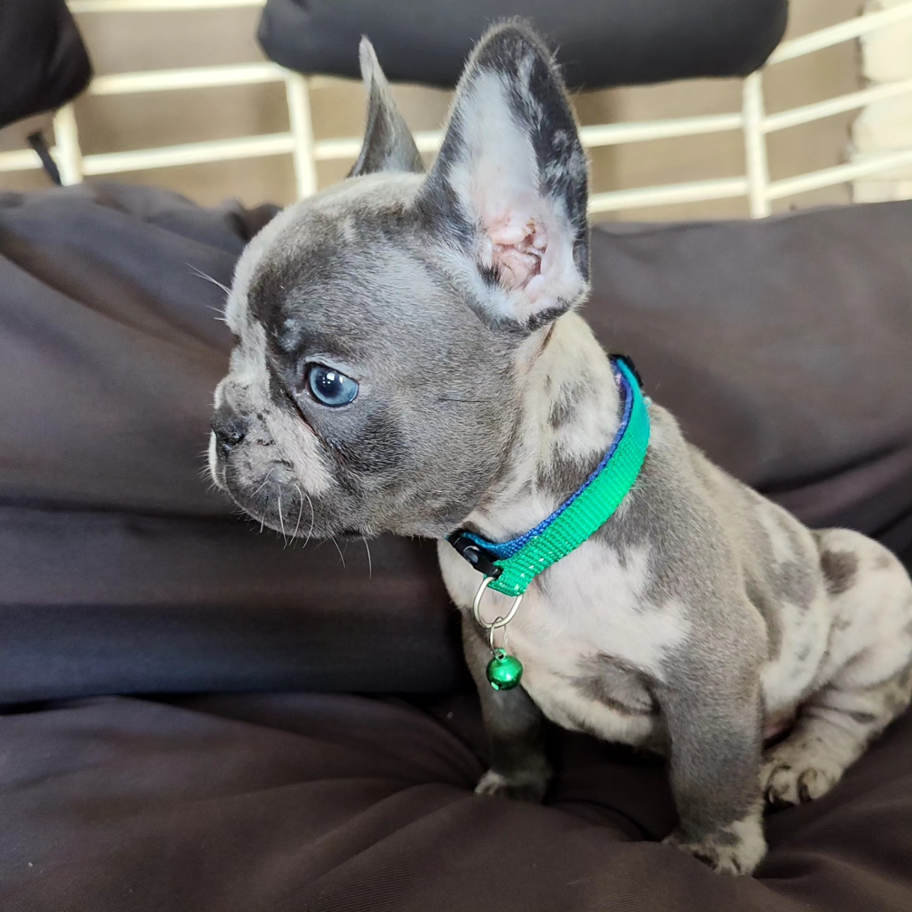
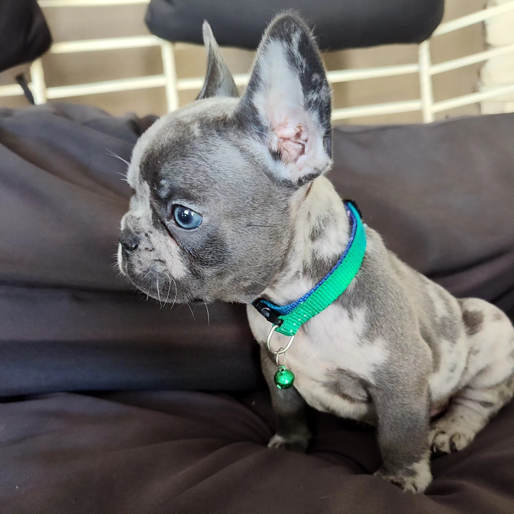

Criadero de perros General Rodriguez


Criadero de Perros General Rodriguez
Criadero de Perros Gral. Rodriguez es un establecimiento dedicado a la crianza responsable y ética de perros de raza, priorizando la salud, el bienestar y la socialización de cada cachorro. Con años de experiencia y un equipo apasionado por los animales, ofrecemos ejemplares de alta calidad, criados en un ambiente seguro y familiar. Nos especializamos en razas como [American pitbull terrier, bulldog frances y exoticos], garantizando estándares de pureza, vacunación al día y asesoramiento personalizado para cada adoptante. En Criadero Gral Rodriguez, nos comprometemos con el respeto y el amor por los perros, asegurando que cada uno encuentre un hogar adecuado y lleno de cariño.
 
